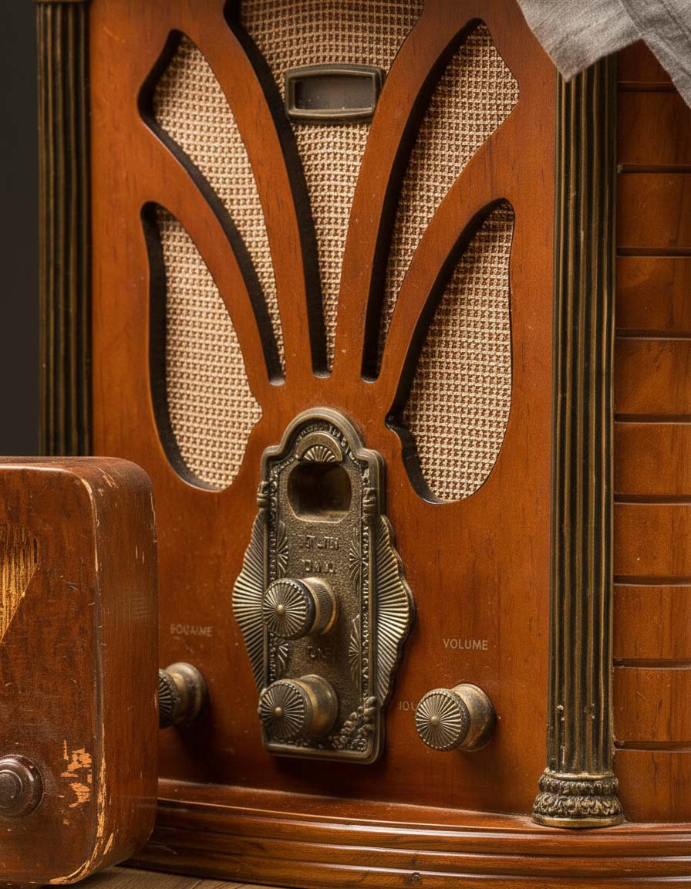
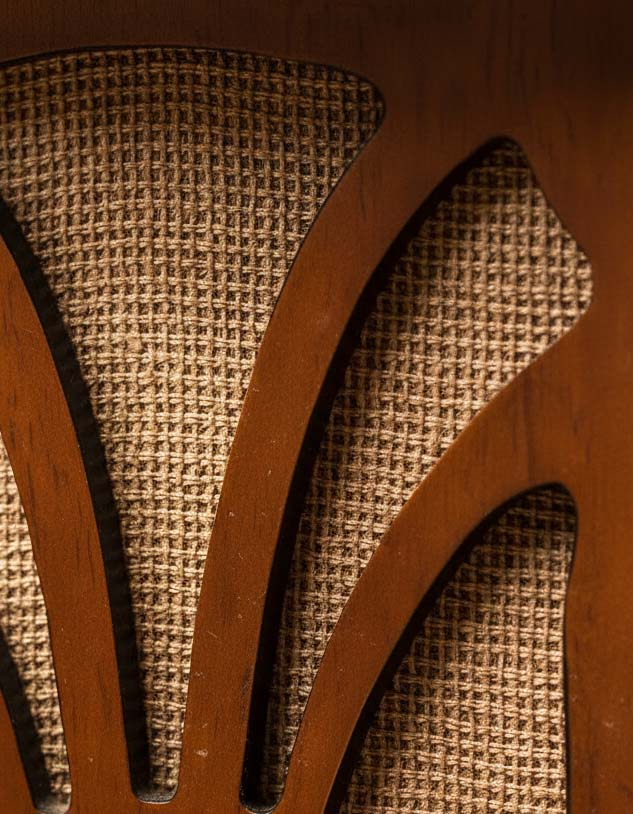
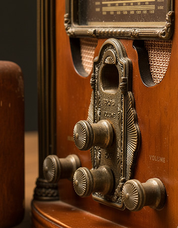
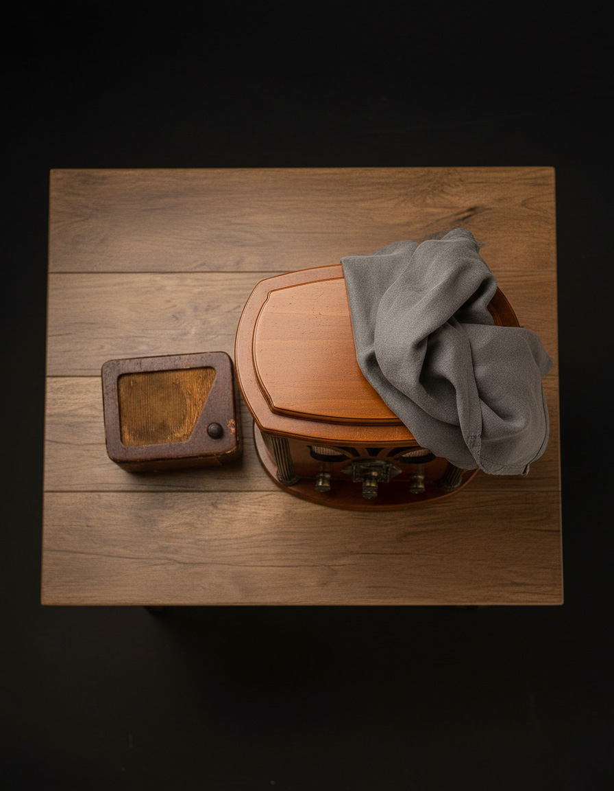

PRIM Rondore I05.1222.52.W – Radioempfänger
Der PRIM Rondore I05.1222.52.W stammt aus einer Zeit, in der Radiogeräte zugleich Gebrauchsobjekt und Möbelstück waren. Das kantige Gehäuse aus Holz, Kunststoff und Metall zeigt eine zurückhaltende Formensprache und eine warme, dunkelbraune Oberfläche.
Das Radio verfügt über einen UKW-Empfangsbereich (FM). Altersbedingte Gebrauchsspuren sind vorhanden und unterstreichen den authentischen Charakter des Objekts.
Maße:
350 × 370 × 220 mm
Zustand:
Guter altersgemäßer Zustand. Optisch gepflegt, technische Funktion geprüft.*
Preis:
280€
Verfügbare Exemplare: 1
* Zu Beachten: Hinweise zum technischen Zustand erläutern wir gern vor Ort oder auf Anfrage.



